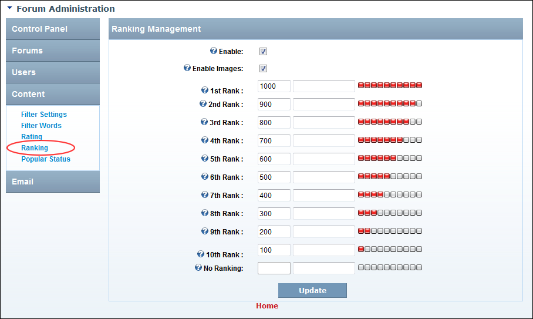

Managing Forum User Ranking
How to enable or disable ranking of forum users and set the number of posts required to achieve ranking positions in the Forum module. If enabled, the ranking images will display in the user posts avatar area.
- Go to the Forum Administration page. See "Navigating to the Forum Admin Page"
- In the left-hand panel, select Content > Ranking. This displays the Ranking Management window.
- At Enable, to enable ranking - OR - to disable.
- At Enable Images, to display ranking as images - OR - to display ranking as text. If this option is checked then the images displayed on this page will be used.
- At 1st Rank complete the following:
- In the Count text box (left), edit the number of posts required for a poster to rank as 1st.
- In the Title text box (right), enter/edit a title to be displayed for this level of ranking. If the field is left blank then the title of "1st Level Poster" is displayed. Note: If the Enable Images check box is checked
 then this option is not used.
then this option is not used.
- Repeat Steps 5 to manage 2nd-10th ranking fields.
- Optional. In the No Ranking text box, enter a title to be displayed for users without any ranking. Note: If the Enable Images check box above is checked, then this option is not used.
-

Configuring Post Ranking Settings